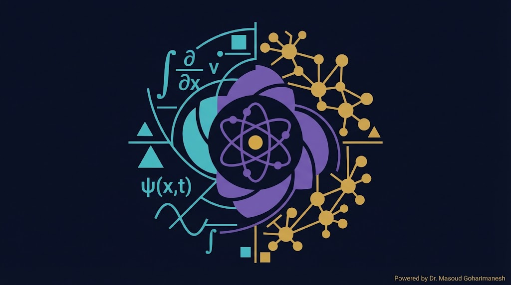
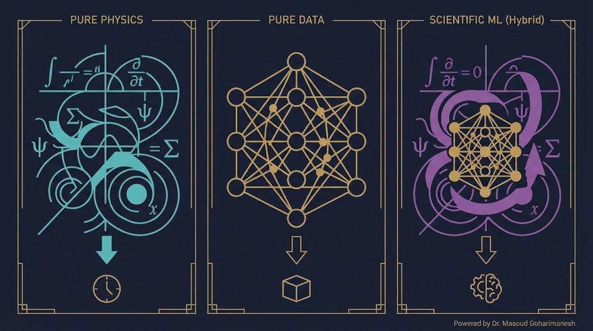
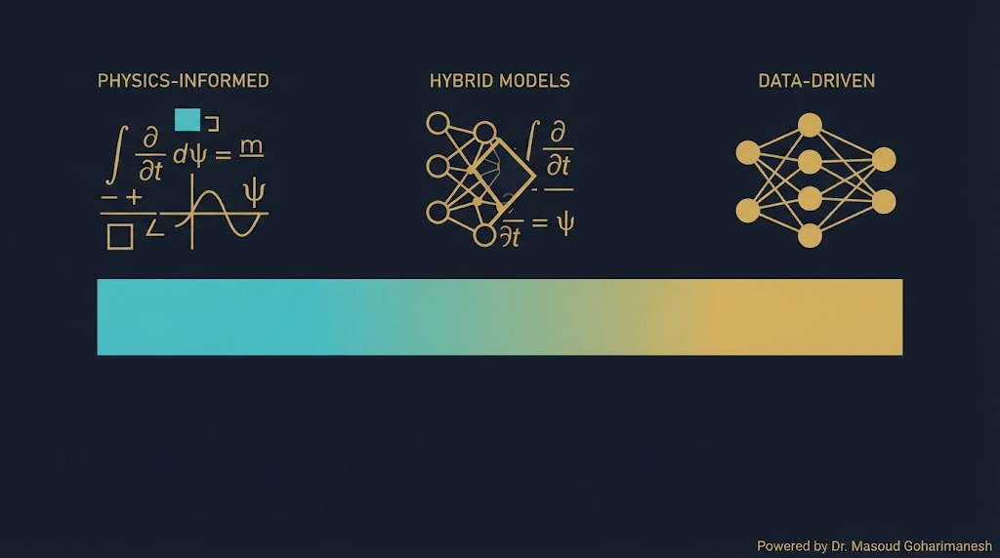
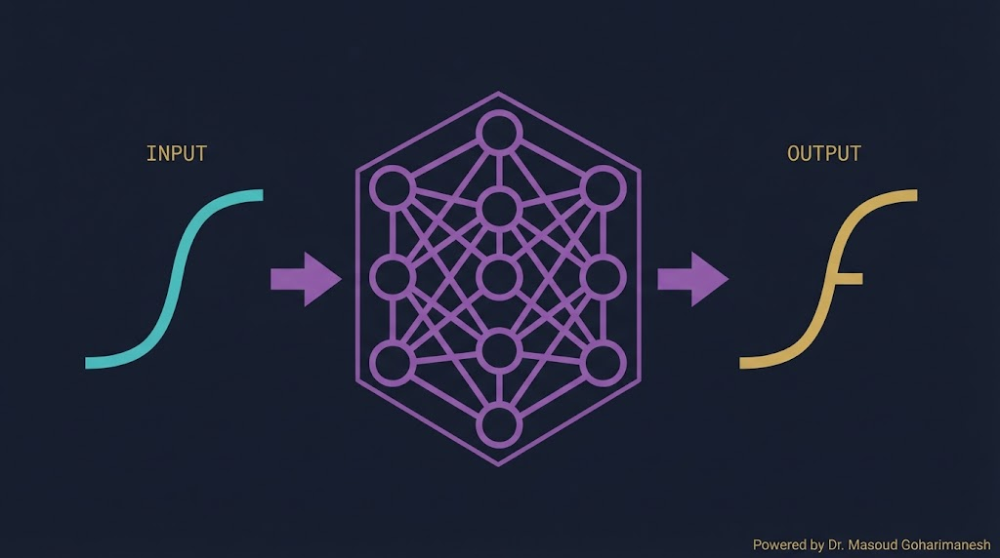
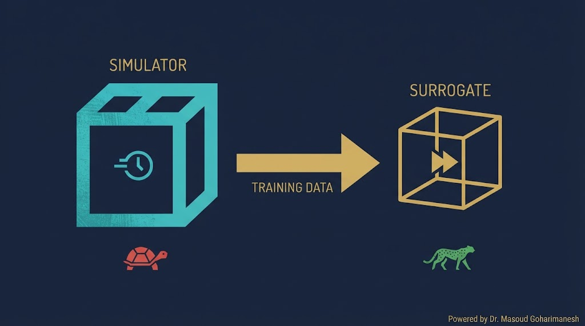
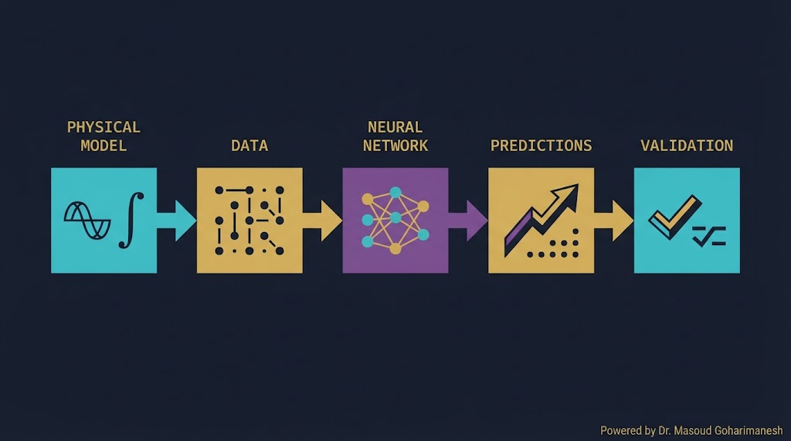
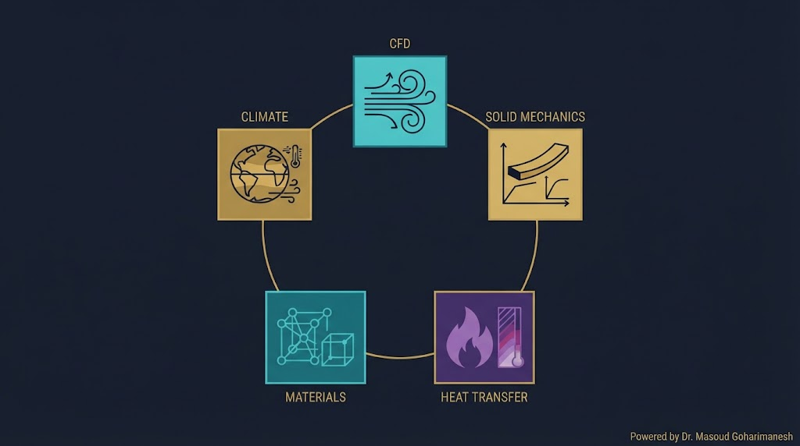

جلسه ۲۰ — Scientific AI
جلسه ۲۰ — Scientific AI
جلسه ۲۰ — Scientific AI
جلسه ۲۰ — Scientific AI
 ستاره این جلسه
به یاد شهدای والامقام
ستاره این جلسه
به یاد شهدای والامقامScientific Machine Learning · Physics-Informed AI
When Physics Meets Data
RAG، Vector DB، AI Agent
Scientific AI، Surrogate، Neural Operators
✅ Scientific AI چیست؟
✅ سه رویکرد مدلسازی
✅ Physics-Informed
✅ Neural Operators
✅ Surrogate Models
✅ کاربرد در مکانیک
تا حالا AI را برای تشخیص، پیشبینی، و کنترل دیدیم. اما یک سؤال اساسی: آیا AI میتواند فیزیک را یاد بگیرد؟ یعنی به جای داده زیاد، از معادلات فیزیکی استفاده کند؟
پاسخ: بله. این همان چیزی است که Scientific AI نامیده میشود — ترکیب هوشمندانهی معادلات فیزیکی و شبکههای عصبی. و این حوزه، دقیقاً برای مهندسان مکانیک طراحی شده!

معادلات دقیق، تفسیرپذیر
سریع، انعطافپذیر
ترکیب هر دو
CFD، ارتعاشات، حرارت

| رویکرد | مزیت | عیب |
|---|---|---|
| Pure Physics | دقیق، تفسیرپذیر | کند، نیاز به فرضیات |
| Pure Data (ML) | سریع، انعطافپذیر | جعبه سیاه، نیاز به داده زیاد |
| Scientific AI | ترکیب هر دو | پیچیدگی پیادهسازی |
Scientific AI (AI علمی) یا Scientific Machine Learning (SciML) حوزهای است که از AI برای حل مسائل علمی و مهندسی استفاده میکند — با ترکیب دانش فیزیکی و داده.

ترکیب PDE و شبکه عصبی
یادگیری نگاشت بین فضاهای تابعی
مدل سریع جایگزین شبیهساز
کشف معادلات از داده
روی هر رویکرد کلیک کنید و مقایسه کنید.
به جای آموزش صرف از داده، معادلات فیزیکی (PDE) را در تابع هزینه شبکه عصبی قرار میدهیم.
اختلاف پیشبینی با داده واقعی
باقیمانده معادله دیفرانسیل
شرایط مرزی و اولیه
این ایده در سال ۲۰۱۹ توسط Maziar Raissi و همکاران معرفی شد — و از آن زمان به یکی از داغترین حوزههای مهندسی تبدیل شده.
Neural Operator یک شبکه عصبی است که نگاشت بین فضاهای تابعی را یاد میگیرد — یعنی یک تابع را به تابع دیگر تبدیل میکند.

Fourier Neural Operator
Deep Operator Network
Geometry-Aware
یک تابع را به تابع دیگر تبدیل کنید.
یک شبیهساز CFD یا FEM ممکن است ساعتها یا روزها طول بکشد. Surrogate Model یک جایگزین سریع است که در چند میلیثانیه همان نتیجه را میدهد.

پیشبینی سریع بهجای حل کامل
100-1000× سریعتر از شبیهساز
از دادههای شبیهساز
بهینهسازی، طراحی، کنترل
مقایسه شبیهساز کامل و Surrogate را ببینید.

معادلات حاکم
دادههای تجربی/شبیهسازی
آموزش با Loss ترکیبی
پیشبینی سریع
اعتبارسنجی با فیزیک
از سنسورها، آزمایشگاه — کم و گران
از CFD، FEM — زیاد و ارزان
از معادلات — بینهایت
بهترین: فیزیک + داده
آموزش PINN در مسائل 3D گران است
انتخاب $\lambda, \mu$ بهینه دشوار
هندسههای واقعی چالشبرانگیز
چطور بفهمیم مدل درست است؟
| معیار | Pure Physics | Pure ML | Scientific AI |
|---|---|---|---|
| سرعت | کند | سریع | سریع |
| دقت | بالا | متوسط | بالا |
| نیاز به داده | کم | بسیار زیاد | متوسط |
| تفسیرپذیری | بالا | پایین | متوسط |
| تعمیمپذیری | بالا | پایین | بالا |
| پیادهسازی | متوسط | ساده | پیچیده |

شبیهسازی جریان سیال
تحلیل تنش و تغییر شکل
معادله گرما
سیستمهای دینامیکی
کشف مواد جدید
پیشبینی آبوهوا
| ابزار | کاربرد | زبان |
|---|---|---|
| DeepXDE | PINN و PDE Solver | Python |
| NeuralOperator | FNO، DeepONet | Python |
| Modulus (NVIDIA) | PINN صنعتی | Python |
| PyTorch | پایه پیادهسازی | Python |
| JAX | محاسبات سریع PINN | Python |
| MATLAB PDE Toolbox | کلاسیک + ML | MATLAB |
import numpy as np from sklearn.neural_network import MLPRegressor import time # ۱. تولید داده از شبیهساز (مثلاً معادله گرما) def simulator(k, L, T): # تابع کند — شبیهسازی تحلیلی x = np.linspace(0, L, 100) t = np.linspace(0, T, 100) T_x = np.exp(-k * np.pi**2 * t / L**2) return np.mean(T_x) # ۲. تولید ۱۰۰۰ نمونه X_train, y_train = [], [] for _ in range(1000): k = np.random.uniform(0.1, 10) L = np.random.uniform(0.5, 2) T = np.random.uniform(1, 5) y = simulator(k, L, T) X_train.append([k, L, T]) y_train.append(y) X_train = np.array(X_train) y_train = np.array(y_train) # ۳. آموزش Surrogate surrogate = MLPRegressor(hidden_layer_sizes=(64, 64), max_iter=1000) surrogate.fit(X_train, y_train) # ۴. مقایسه سرعت X_test = [[2.0, 1.0, 3.0]] t0 = time.time() y_sim = simulator(*X_test[0]) sim_time = time.time() - t0 t0 = time.time() y_pred = surrogate.predict(X_test) sur_time = time.time() - t0 print(f"Simulator: {sim_time*1000:.2f} ms") print(f"Surrogate: {sur_time*1000:.2f} ms") print(f"Speedup: {sim_time/sur_time:.0f}x")
import torch import torch.nn as nn # شبکه عصبی class PINN(nn.Module): def __init__(self): super().__init__() self.net = nn.Sequential( nn.Linear(2, 32), nn.Tanh(), nn.Linear(32, 32), nn.Tanh(), nn.Linear(32, 1) ) def forward(self, x, t): inp = torch.cat([x, t], dim=1) return self.net(inp) # معادله گرما: u_t = α u_xx def pde_loss(model, x, t, alpha=0.01): x.requires_grad_(True) t.requires_grad_(True) u = model(x, t) u_t = torch.autograd.grad(u, t, grad_outputs=torch.ones_like(u), create_graph=True)[0] u_x = torch.autograd.grad(u, x, grad_outputs=torch.ones_like(u), create_graph=True)[0] u_xx = torch.autograd.grad(u_x, x, grad_outputs=torch.ones_like(u_x), create_graph=True)[0] return torch.mean((u_t - alpha * u_xx)**2) # آموزش model = PINN() optimizer = torch.optim.Adam(model.parameters(), lr=1e-3) for epoch in range(5000): x = torch.rand(1000, 1) * 2 - 1 t = torch.rand(1000, 1) * 1 loss = pde_loss(model, x, t) optimizer.zero_grad() loss.backward() optimizer.step() if epoch % 500 == 0: print(f"Epoch {epoch}, Loss: {loss.item():.6f}")
[AI] HW20 - نام - شماره دانشجویی به arcslab.uth@gmail.com
جستوجوی پروژههای SciML
جلسه ۲۰ — اصلیتحلیل مقالات علمی
پشتیبانکدنویسی PINN
پیشنهادیدر Perplexity جستوجو کنید: «PINN mechanical engineering 2024» و ۳ مقاله معتبر پیدا کنید.
ترکیب فیزیک و داده
PDE در تابع هزینه
یادگیری نگاشت تابعها
جایگزین سریع شبیهساز
CFD، جامدات، حرارت، ارتعاشات
Next Session: PINN — Physics-Informed Neural Networks
• PINN — تعریف کامل
• معماری PINN
• تابع هزینه ترکیبی
• حل معادله گرما، موج، لاپلاس
• پیادهسازی کامل با PyTorch
• DeepXDE